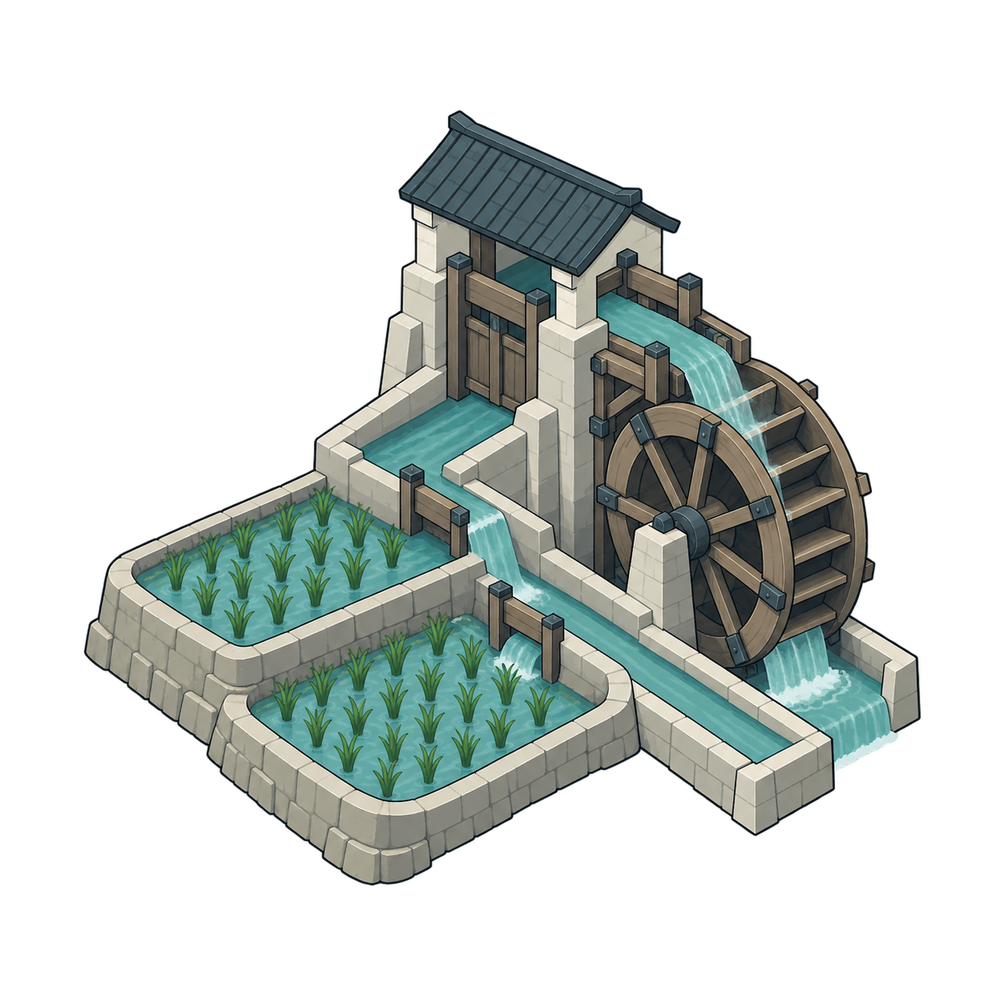
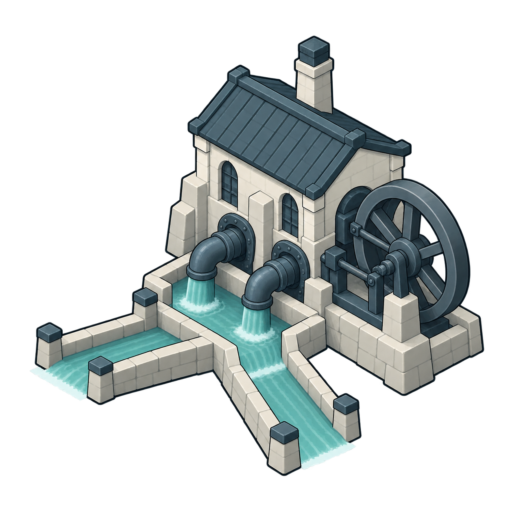
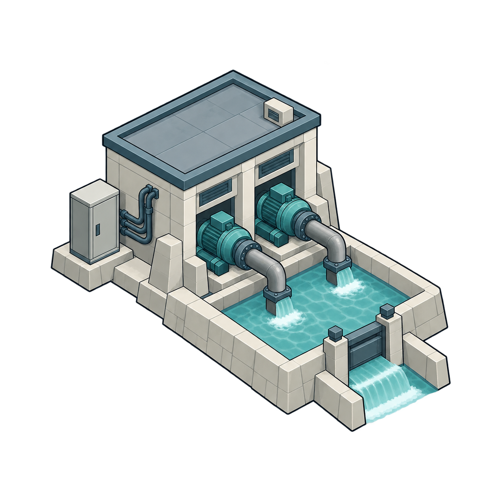
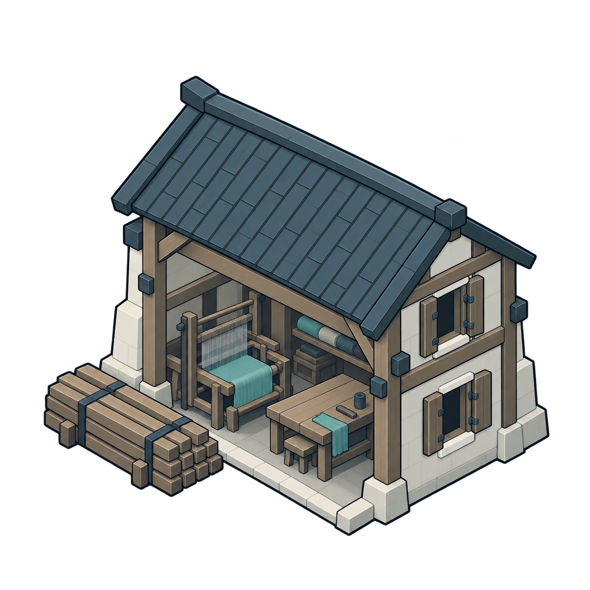
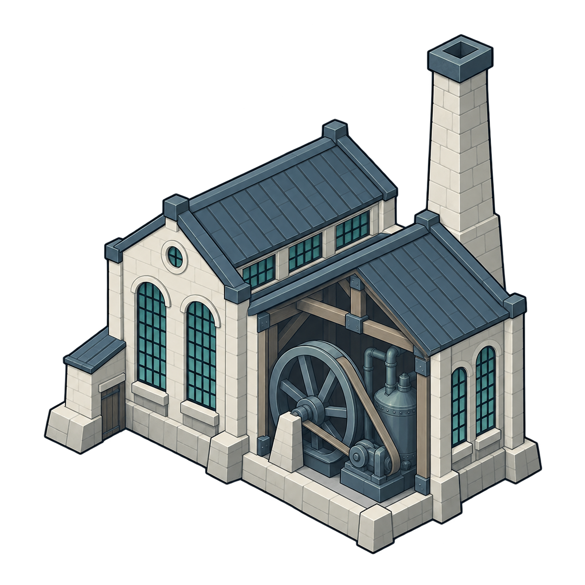
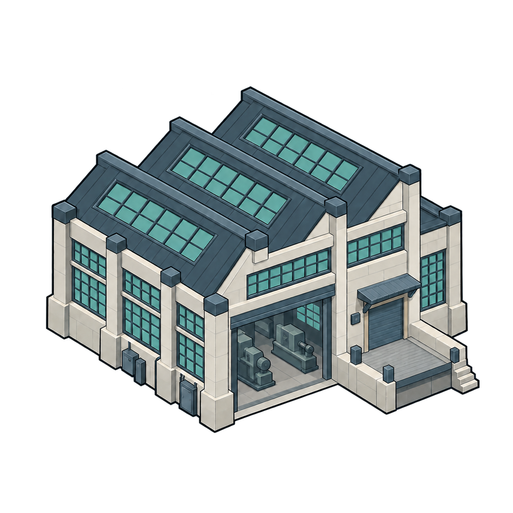
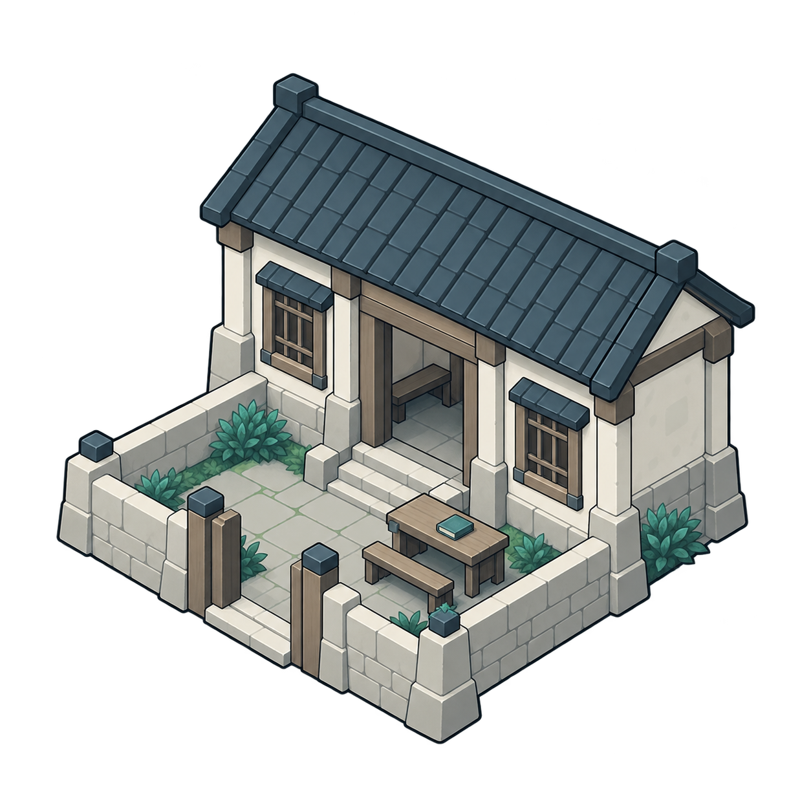
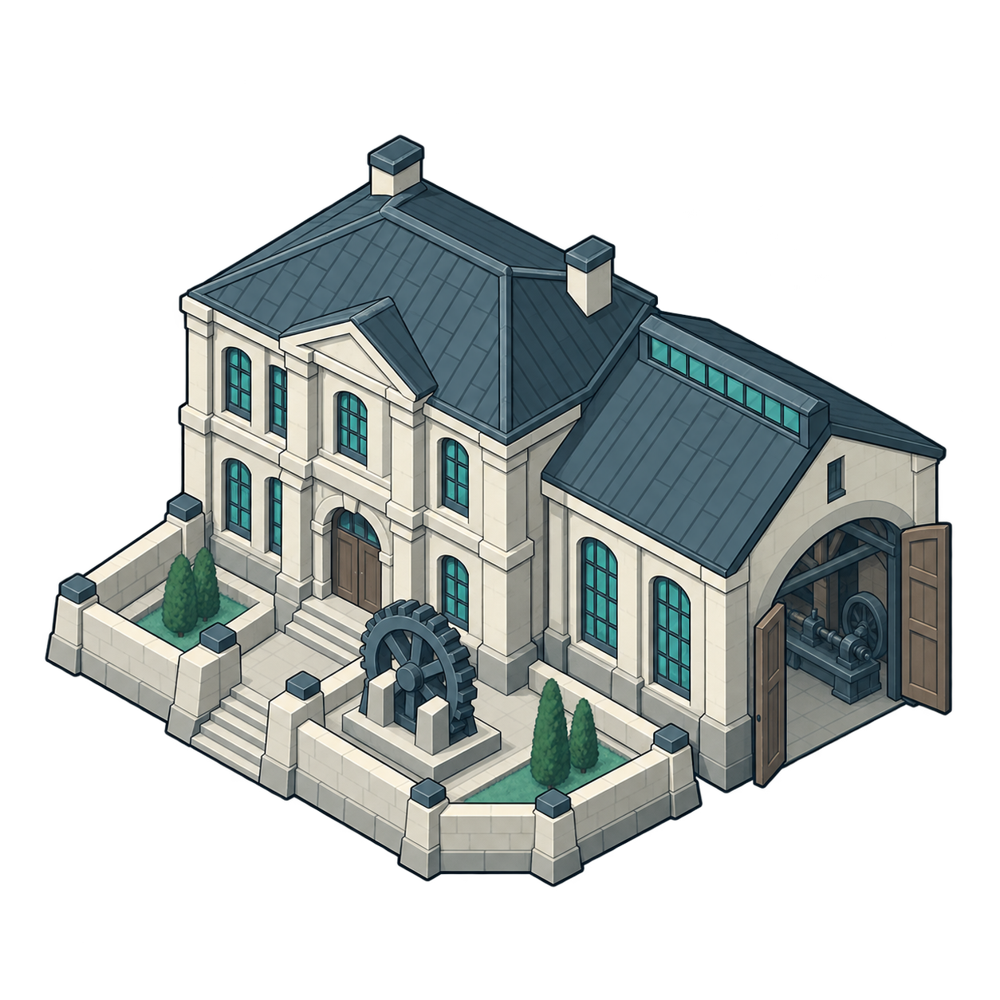
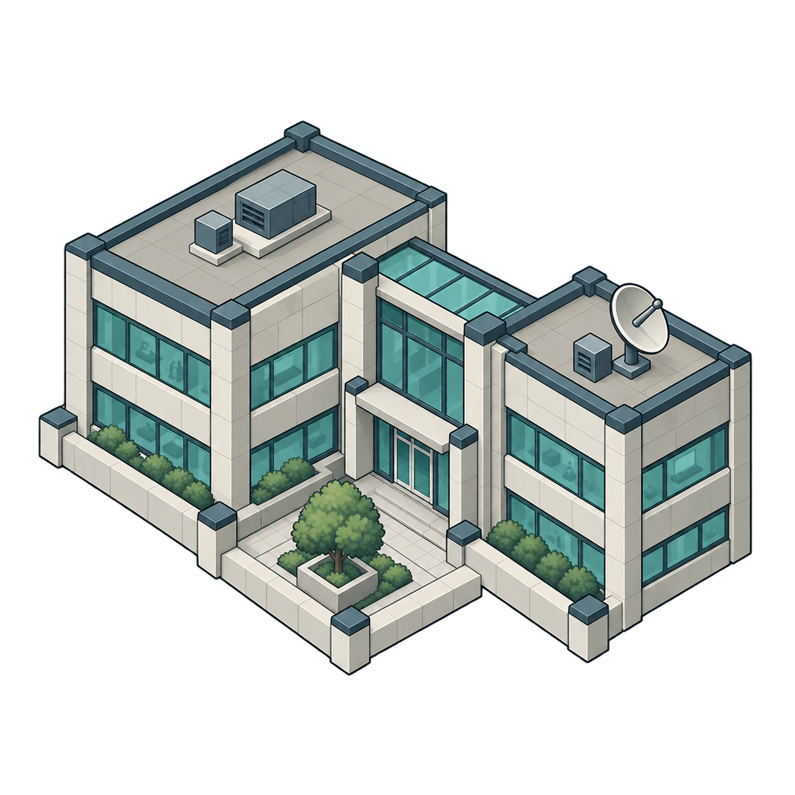

水利 / 早期待初审

渠系水轮
irrigation_earlyPNG · 原生透明
点击大图查看原文件
9 张独立建筑资源 · 统一视角与配色 · 无内嵌文字 · 待人工初审，尚未接入游戏
由左至右：早期 → 工业期 → 现代期。查看缩略辨识、透明边缘与暗／浅底效果。

irrigation_earlyPNG · 原生透明
点击大图查看原文件

irrigation_industrialPNG · 原生透明
点击大图查看原文件

irrigation_modernPNG · 原生透明
点击大图查看原文件

workshop_earlyPNG · 原生透明
点击大图查看原文件

workshop_industrialPNG · 原生透明
点击大图查看原文件

workshop_modernPNG · 原生透明
点击大图查看原文件

education_earlyPNG · 原生透明
点击大图查看原文件

education_industrialPNG · 原生透明
点击大图查看原文件

education_modernPNG · 原生透明
点击大图查看原文件